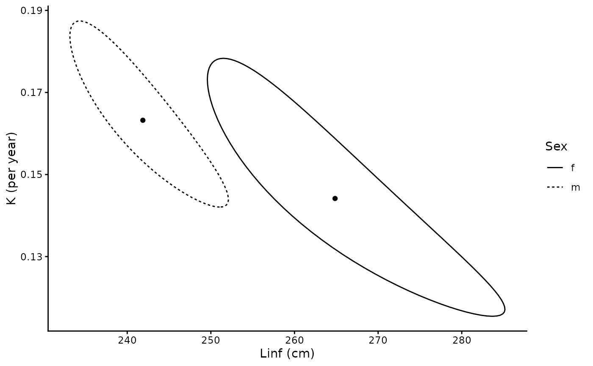

Constructs approximate joint confidence regions for \(L_\infty\) and
\(K\) from a growth fit, following Kimura (1980). Unlike an
ellipse drawn from the covariance matrix of the estimates, the region
follows a contour of equal likelihood and need not be symmetrical about the
estimates.
Arguments
- x
An object returned by
growth- level
Confidence level
- profile_L0
Re-estimate \(L_0\) at each point rather than holding it at its estimate
- n_steps
Number of values of \(K\) at which the boundary is found
Value
A tibble of class "growth_region" with one row per group,
holding the estimates, the number of aged individuals n, the
critical value crit, and the boundary of the region in the list
column region. summary() gives the range of \(L_\infty\)
and \(K\) within each region.
Details
Kimura (1980) defined the region by the residual sum of squares,
$$S(L_\infty, K, t_0) \le \hat{S}\left(1 + \frac{p}{N - p} F_{p, N-p}(1 - \alpha)\right)$$
with \(p = 3\) parameters and \(N\) observations, and displayed it as
the two-dimensional cross-section for \(L_\infty\) and \(K\) with
\(t_0\) held at its estimate. growth() maximises a likelihood with
a standard deviation that changes with length, so the same criterion is
applied to the log-likelihood \(\ell\):
$$2\left[\hat{\ell} - \ell(L_\infty, K)\right] \le N \log\left(1 + \frac{p}{N - p} F_{p, N-p}(1 - \alpha)\right)$$
For a single group with constant variance this is identical to Kimura's
criterion. \(N\) is the number of aged individuals in the group.
\(L_0\) takes the place of \(t_0\) and is held at its estimate, as are
the parameters of the other groups. \(CV_L\) is re-estimated at each
point, as \(\sigma\) effectively is in the ratio of sums of squares. As
Kimura noted, holding the third parameter fixed gives a cross-section of
the region rather than a true confidence region, since more extreme values
of \(L_\infty\) and \(K\) may occur at a different value of it. Setting
profile_L0 = TRUE re-estimates \(L_0\) at each point as well,
giving the projection of the full three-parameter region onto
\(L_\infty\) and \(K\). The two are close when \(L_0\) is well
determined, for example by neonates. When it is not, the projection can
be noticeably wider, mainly in \(K\).
As in Kimura (1980), the boundary is found by stepping through values of \(K\) and solving for the two values of \(L_\infty\) at which the likelihood reaches the critical value. This follows regions that are strongly curved, as they often are when few old animals have been aged. For models with ageing error each evaluation of the likelihood includes the Laplace approximation, and the calculation takes longer.
References
Kimura, D.K. (1980) Likelihood methods for the von Bertalanffy growth curve. Fishery Bulletin 77(4), 765-776.
Examples
library(ggplot2)
data(blacktip)
g <- growth(STL, age_agree, sex, data = blacktip, neonate = neonate)
#> The categorical variable sex has 2 levels.
r <- growth_region(g)
summary(r)
#> # A tibble: 2 × 9
#> group Linf Linf_min Linf_max K K_min K_max n level
#> <chr> <dbl> <dbl> <dbl> <dbl> <dbl> <dbl> <int> <dbl>
#> 1 f 265. 250. 285. 0.144 0.116 0.178 33 0.95
#> 2 m 242. 233. 252. 0.163 0.142 0.187 69 0.95
plot(r) + labs(x = "Linf (cm)", y = "K (per year)", linetype = "Sex")
